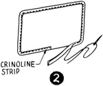
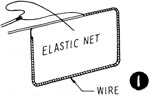
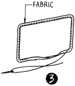
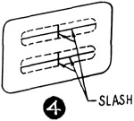
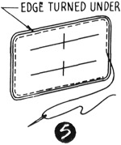
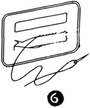

1952—How to Make Hats
by Ruby Carnahan
Fabric-Covered Buckles
FABRIC COVERED BUCKLES
Place buckle pattern on elastic net and draw around pattern on net and cut out. (Illus. 1) Wire outer edge of buckle foundation if a stiff buckle is desired, cover wire with a bias crinoline strip. For a soft buckle do not wire foundation.
TO COVER BUCKLE FOUNDATION
Place pattern on a double piece of fabric, mark around pattern on fabric, allow 1/4" and cut out, on outside edge only.
(Illus. 3) Turn fabric over edge of foundation and sew to other side of foundation.
(Illus. 4) Slash fabric in center openings of buckle from side to side. Clip fabric in corners of openings and turn fabric through to other side of foundation and sew. Be sure stitches do not come through to right side of buckle.
Baste fabric to other side of buckle, turning in edges of fabric (Illus. 5) around outer edge of buckle and slip stitching.
Slash center openings and turn fabric under and slip stitch (Illus. 6).
TO MAKE A BUCKLE OF FELT
Place a buckle pattern on a piece of felt and mark around pattern on felt and cut out two pieces alike. Glue buckle pieces together with Milliners glue.